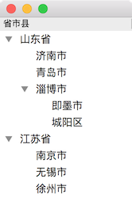
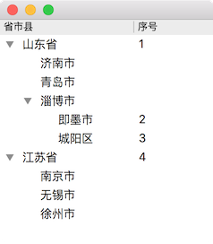

树形控件是非常常用的，例如组织结构、目录树、省市县的地区结构等都是典型的树形结构，Qt 里可以使用 QTreeView 和 QTreeWidget 来展示树形结构，这里我们只介绍 QTreeView 的使用，QTreeView 本身只用于树的显示，树的数据由 QStandardItemModel 来存储。
创建单列树 创建单列树的节点分两种情况：
创建第一级节点调用函数 QStandardItemModel::appendRow(QStandardItem *item)
创建第二级、第三级等非第一级节点调用函数 QStandardItem::(QStandardItem *item)
下面的例子创建省市县的树形结构展示如何创建只有一列的树，为了更好的从变量名上看出地区的关系，使用数字和层级的方式进行命名，程序运行结果如下：

1 2 3 4 5 6 7 8 9 10 11 12 13 14 15 16 17 18 19 20 21 22 23 24 25 26 27 28 29 30 31 32 33 34 35 36 37 38 39 40 41 42 43 44 45 46 47 48 49 50 #include <QApplication> #include <QTreeView> #include <QStandardItem> #include <QStandardItemModel> int main (int argc, char *argv[]) QApplication a (argc, argv) ; QStandardItemModel *model = new QStandardItemModel (); model->setHorizontalHeaderLabels (QStringList () << "省市县" ); QStandardItem *provinceItem_1 = new QStandardItem ("山东省" ); QStandardItem *provinceItem_2 = new QStandardItem ("江苏省" ); QStandardItem *cityItem_1_1 = new QStandardItem ("济南市" ); QStandardItem *cityItem_1_2 = new QStandardItem ("青岛市" ); QStandardItem *cityItem_1_3 = new QStandardItem ("淄博市" ); QStandardItem *cityItem_2_1 = new QStandardItem ("南京市" ); QStandardItem *cityItem_2_2 = new QStandardItem ("无锡市" ); QStandardItem *cityItem_2_3 = new QStandardItem ("徐州市" ); QStandardItem *countyItem_1_3_1 = new QStandardItem ("即墨市" ); QStandardItem *countyItem_1_3_2 = new QStandardItem ("城阳区" ); model->appendRow (provinceItem_1); model->appendRow (provinceItem_2); provinceItem_1->appendRow (cityItem_1_1); provinceItem_1->appendRow (cityItem_1_2); provinceItem_1->appendRow (cityItem_1_3); provinceItem_2->appendRow (cityItem_2_1); provinceItem_2->appendRow (cityItem_2_2); provinceItem_2->appendRow (cityItem_2_3); cityItem_1_3->appendRow (countyItem_1_3_1); cityItem_1_3->appendRow (countyItem_1_3_2); QTreeView *view = new QTreeView (); view->setModel (model); view->resize (500 , 500 ); view->show (); view->expandAll (); return a.exec (); }
创建多列树 创建多列树的节点也分两种情况：
创建第一级节点调用函数 QStandardItemModel::appendRow(const QList<QStandardItem *> &items)
创建第二级、第三级等非第一级节点调用函数 QStandardItem::(const QList<QStandardItem *> &items)
和创建单列树时 appendRow 的区别只是参数不同，多列时为 QStandardItem 的 list，每列一个 QStandardItem，下面还是以上面创建省市县的树为例进行介绍创建多列的树，不过为了更好的展示创建多列部分，把数据的存储方式改变为 QMap，程序运行结果如下：

1 2 3 4 5 6 7 8 9 10 11 12 13 14 15 16 17 18 19 20 21 22 23 24 25 26 27 28 29 30 31 32 33 34 35 36 37 38 39 40 41 42 43 44 45 46 47 48 #include <QApplication> #include <QTreeView> #include <QStandardItem> #include <QStandardItemModel> #include <QMap> #include <QList> int main (int argc, char *argv[]) QApplication a (argc, argv) ; QMap<QString, QList<QString> > regions; regions["所有省" ] = QList<QString>() << "山东省" << "江苏省" ; regions["山东省" ] = QList<QString>() << "济南市" << "青岛市" << "淄博市" ; regions["江苏省" ] = QList<QString>() << "南京市" << "无锡市" << "徐州市" ; regions["淄博市" ] = QList<QString>() << "即墨市" << "城阳区" ; QStandardItemModel *model = new QStandardItemModel (); model->setHorizontalHeaderLabels (QStringList () << "省市县" << "序号" ); int n = 0 ; for (QString province : regions.value ("所有省" )) { QStandardItem *provinceItem = new QStandardItem (province); model->appendRow (QList<QStandardItem*>() << provinceItem << new QStandardItem (QString::number (++n))); for (QString city : regions.value (province)) { QStandardItem *cityItem = new QStandardItem (city); provinceItem->appendRow (cityItem); for (QString county : regions.value (city)) { QStandardItem *countyItem = new QStandardItem (county); cityItem->appendRow (QList<QStandardItem*>() << countyItem << new QStandardItem (QString::number (++n))); } } } QTreeView *view = new QTreeView (); view->setModel (model); view->resize (500 , 500 ); view->setColumnWidth (0 , 150 ); view->show (); view->expandAll (); return a.exec (); }
提示：不需要每一行都同时创建同样的多列，单列和多列可以混用。
有意思的是：
如果 header 只有一个，并且第一级节点只创建了单列，即使非一级节点创建了多列，显示的结果仍然只有单列，修改相应的代码为：
1 2 model->setHorizontalHeaderLabels (QStringList () << "省市县" ); model->appendRow (QList<QStandardItem*>() << provinceItem);
如果 header 只有一个，即使第一级节点只创建了单列，但是非一级节点创建了多列，显示的结果会有多列，修改相应的代码为：
1 2 model->setHorizontalHeaderLabels (QStringList () << "省市县" ); model->appendRow (QList<QStandardItem*>() << provinceItem << new QStandardItem (QString::number (++n)));
如果 header 有多个，即使第一级节点只创建了单列，但是非一级节点创建了多列，显示的结果会有多列，修改相应的代码为：
1 2 model->setHorizontalHeaderLabels (QStringList () << "省市县" << "序号" ); model->appendRow (QList<QStandardItem*>() << provinceItem);
导出树为 JSON 基于上面创建单列树的代码 (创建树)，函数 QString exportTreeToJson(QStandardItemModel *model) 把树导出为 JSON 字符串 (因为 JSON 也是树的一种表现形式)：
1 2 3 4 5 6 7 8 9 10 11 12 13 14 15 16 17 18 19 20 21 22 23 24 25 26 27 28 29 30 31 32 33 34 35 36 37 38 39 40 41 42 43 44 #include <QJsonObject> #include <QJsonArray> #include <QJsonDocument> QString exportTreeToJson (QStandardItemModel *model) { QJsonArray provinces; for (int row = 0 ; row < model->rowCount (); ++row) { provinces.append (exportTreeNodeToJson (model->item (row))); } QJsonObject root; root.insert ("provinces" , provinces); return QJsonDocument (root).toJson (); } QJsonObject exportTreeNodeToJson (QStandardItem *item) { if (NULL == item) { return QJsonObject (); } QJsonArray children; for (int row = 0 ; row < item->rowCount (); ++row) { children.append (exportTreeNodeToJson (item->child (row))); } QJsonObject region; region.insert ("name" , item->data (Qt::DisplayRole).toString ()); region.insert ("children" , children); return region; }
提示：
这里只是展示了单列的导出，对于多列导出，就是获取对应列的 item 和 QJsonObject 再加一个属性的事情
如果 item 使用 setData 设置了其他数据，也应该使用函数 QStandardItem::data 取出数据并添加到 QJsonObject 的属性中
导入 JSON 创建树 函数 void importTreeFromJson(QStandardItemModel *model, const QString &json) 导入 JSON 字符串创建树，也是需要注意创建一级节点和非一级节点的不同：
1 2 3 4 5 6 7 8 9 10 11 12 13 14 15 16 17 18 19 20 21 22 23 24 25 26 27 28 29 30 31 32 33 34 35 36 37 38 39 40 41 42 43 44 void importTreeFromJson (QStandardItemModel *model, const QString &json) QJsonObject root = QJsonDocument::fromJson (json.toUtf8 ()).object (); QJsonArray provinces = root.value ("provinces" ).toArray (); for (QJsonArray::const_iterator iter = provinces.begin (); iter != provinces.end (); ++iter) { QJsonObject province = iter->toObject (); createTreeNode (model, province, NULL ); } } void createTreeNode (QStandardItemModel *model, const QJsonObject &node, QStandardItem *parentItem) QString name = node.value ("name" ).toString (); QStandardItem *item = NULL ; if (NULL == parentItem) { parentItem = new QStandardItem (name); model->appendRow (parentItem); item = parentItem; } else { item = new QStandardItem (name); parentItem->appendRow (item); } QJsonArray children = node.value ("children" ).toArray (); for (QJsonArray::const_iterator iter = children.begin (); iter != children.end (); ++iter) { QJsonObject child = iter->toObject (); createTreeNode (model, child, item); } }
借助上面已经提供的创建树和导出树为 JSON 的功能，演示导入 JSON 创建树的使用方法：
1 2 3 4 5 6 7 QString json = exportTreeToJson (model); QStandardItemModel *model2 = new QStandardItemModel (); model2->setHorizontalHeaderLabels (QStringList () << "省市县" ); importTreeFromJson (model2, json); QTreeView *view = new QTreeView (); view->setModel (model2);
事件处理 树的常用信号有 2 个：clicked 和 itemChanged：
点击树的节点，view 发射信号 void QAbstractItemView::clicked(const QModelIndex &index) (还有 pressed，但有区别)：
1 2 3 QObject::connect (view, &QTreeView::clicked, [=] (const QModelIndex &index) { qDebug () << index.data ().toString (); });
被选中节点变化后，view 的 selectionModel 发射信号 void currentChanged(const QModelIndex ¤t, const QModelIndex &previous)：
1 2 3 4 connect (view->selectionModel (), &QItemSelectionModel::currentChanged, [this ](const QModelIndex &index) { qDebug () << index.data ().toString (); });
此信号是非常有用的，例如要显示选中节点的信息，如果使用 clicked 来实现，则点击节点的时候能够正确的显示出选中节点的信息，但是当删除被选中的节点时，其他节点自动变为被选中状态，但这时被选中节点的信息并没有显示出来，因为这时没有发射信号 clicked，而使用 selectionModel 的 currentChanged 的话就能正确处理这种情况。此外和节点选中状态变化还有相关的信号还有 currentRowChanged 、currentColumnChanged 、selectionChanged 等，更详细的信息请阅读帮助文档。
编辑树的节点，model 发射信号 void QStandardItemModel::itemChanged(QStandardItem *item) ：
1 2 3 QObject::connect (model, &QStandardItemModel::itemChanged, [=] (QStandardItem *item) { qDebug () << item->data (Qt::DisplayRole).toString (); });
右键菜单 QTreeView 上增加右键菜单很简单，有点困难的可能就是要得到右键点击处的节点，动态显示菜单项：
1 2 3 4 5 6 7 8 9 10 11 12 13 14 15 16 17 18 19 20 21 22 23 24 QAction *createAction = new QAction ("创建" , view); QAction *deleteAction = new QAction ("删除" , view); view->setContextMenuPolicy (Qt::CustomContextMenu); QObject::connect (view, &QTreeView::customContextMenuRequested, [=] { QMenu menu; QPoint posAtViewport = view->viewport ()->mapFromGlobal (QCursor::pos ()); QModelIndex index = view->indexAt (posAtViewport); menu.addAction (createAction); if (index.isValid ()) { menu.addAction (deleteAction); } menu.exec (QCursor::pos ()); });
Context menu 中文翻译成了右键菜单其实是不准确的，context menu 的意思很明确，根据右键点击处的环境信息显示相关的菜单，就像我们的这个例子，点击节点的时候显示创建和删除 2 个菜单项，点击非节点时只显示创建的菜单项，而不是一成不变的显示同样的菜单项，context menu 能表达出这个意思，而中文的右键菜单丢失了这个信息。
需要注意的是，获取鼠标点击处的 index 参考的坐标是 viewport 的，而不是 tree view 的。
插入节点 在选中的节点位置前插入一个节点，关键是找到这个节点的父节点和它在父节点中的位置，如果父节点有效则插入到父节点下，否则就插入到 model 中 (即成为第一级节点)：
1 2 3 4 5 6 7 8 QModelIndex current = view->selectionModel ()->currentIndex (); QModelIndex parent = current.parent (); if (current.isValid () && parent.isValid ()) { model->itemFromIndex (parent)->insertRow (current.row (), new QStandardItem ("new node" )); } else if (current.isValid ()) { model->insertRow (current.row (), new QStandardItem ("new node" )); }
提示：如果一行中有多列，即同一行中有多个 item，所有 item 的 parent 都是同一个，即为 column 为 0 的 item。
启用拖拽 QTreeView 已经提供了拖拽的功能，但默认没有启用，启用拖拽如下调用几行代码即可：
1 2 3 4 view->setDragEnabled (true ); view->setAcceptDrops (true ); view->setDropIndicatorShown (true ); view->setDragDropMode (QAbstractItemView::InternalMove);
注意：这里的拖拽只能是在同一棵树内部进行拖拽，如果要实现不同的树或者树和其他 Widget 之间的通讯需要默认的拖拽功能满足不了，需要做更多的工作。
拖拽控制 我们已经知道怎么启用树的拖拽功能，对于单列的树上面的代码没有任何问题，但是对于多列的树，拖到第一列上放下没问题，但是拖放到非第一列上会发现被拖拽的行消失了，为了解决这个问题，需要自定义 model，重写 canDropMimeData 来控制拖放的功能，参考下面的 RegionModel 实现：
1 2 3 4 5 6 7 8 9 10 11 12 13 14 #ifndef REGIONMODEL_H #define REGIONMODEL_H #include <QStandardItemModel> class RegionModel :public QStandardItemModel {public : RegionModel (QObject *parent = 0 ); bool canDropMimeData (const QMimeData *data, Qt::DropAction action, int row, int column, const QModelIndex &parent) const override }; #endif
1 2 3 4 5 6 7 8 9 10 11 12 13 14 15 16 17 18 19 20 21 22 23 24 25 #include "RegionModel.h" RegionModel::RegionModel (QObject *parent) : QStandardItemModel (parent) { } bool RegionModel::canDropMimeData (const QMimeData *data, Qt::DropAction action, int row, int column, const QModelIndex &parent) const Q_UNUSED (data); Q_UNUSED (action); Q_UNUSED (row); if (column > 0 ) { return false ; } else if (parent.isValid () && parent.column () > 0 ) { return false ; } else { return true ; } }
canDropMimeData 的参数中需要作一些说明的是 parent，parent 有 3 中情况：
parent.isValid() 返回 false：拖放到任意 2 个一级节点中间，或者在 QTreeView 上但不在任何一个节点上parent.isValid() 返回 true：拖放到 2 个非一级节点 A, B 中间，则 parent 为节点 A, B 的父节点parent.isValid() 返回 true：拖放到节点 A 上，则 parent 为节点 A
当 canDropMimeData 返回 true，松开鼠标后，把被拖拽的节点插入到 parent 下面 (parent.isValid() 返回 false 时创建的是第一级节点)。
在 canDropMimeData 中可以做很多的控制，例如类型一的节点只能拖放到类型二的节点上，不允许拖放到类型三的节点上。为了实现这个功能需要对每个 item 设置类型的数据，如 item->setData("二"，Qt::UserRole+2)，还要获取被拖拽的节点，可以在 QMimeData* QStandardItemModel::mimeData(const QModelIndexList &indexes) const 中获取并保存起来 (indexes 就是被拖拽的节点)，下面是实际项目中的代码片段：
1 2 3 4 5 6 7 QMimeData *BooksModel::mimeData (const QModelIndexList &indexes) const { BooksModel *self = const_cast <BooksModel*>(this ); self->draggedIndex = indexes.size () > 0 ? indexes[0 ] : QModelIndex (); return QStandardItemModel::mimeData (indexes); }
接下来在 canDropMimeData 中获取类型进行判断即可：
1 2 3 4 5 6 7 8 9 10 11 12 13 14 15 16 17 18 19 20 21 22 23 24 25 26 27 28 29 30 31 32 bool BooksModel::canDropMimeData (const QMimeData *data, Qt::DropAction action, int row, int column, const QModelIndex &parent) const Q_UNUSED (data); Q_UNUSED (action); Q_UNUSED (row); Q_UNUSED (column); if (false ) { qDebug () << QString ("Current: [%1, %2], Parent: [%3, %4]-%5 - %6" ) .arg (row).arg (column) .arg (parent.row ()).arg (parent.column ()) .arg (parent.data ().toString ()).arg (parent.isValid () ? "true" : "false" ); } QString parentType = parent.data (ROLE_TYPE).toString (); QString currentType = draggedIndex.data (ROLE_TYPE).toString (); if (TYPE_PHASE == currentType && !parent.isValid ()) { return true ; } else if (TYPE_SUBJECT == currentType && TYPE_PHASE == parentType) { return true ; } else if (TYPE_BOOK == currentType && TYPE_SUBJECT == parentType) { return true ; } else { return false ; } }
拖拽完全控制 可以实现不同的 widget 拖拽到 QTreeView, QTableView, QListView 上，对拖拽进行复杂的控制，一般需要重写 QStandardItemModel 的以下几个方法：
1 2 3 4 5 6 7 8 9 Qt::ItemFlags QAbstractItemModel::flags (const QModelIndex &index) const Qt::DropActions QAbstractItemModel::supportedDragActions () const QStringList QAbstractItemModel::mimeTypes () const bool QAbstractItemModel::canDropMimeData (const QMimeData *data, Qt::DropAction action, int row, int column, const QModelIndex &parent) const bool DragDropListModel::canDropMimeData (const QMimeData *data, Qt::DropAction action, int row, int column, const QModelIndex &parent) bool DragDropListModel::dropMimeData (const QMimeData *data, Qt::DropAction action, int row, int column, const QModelIndex &parent)
Qt Creator 中搜索帮助文档 Model/View Programming ，找到 Using Drag and Drop with Item Views 一节，里面有示例对这几个函数的使用进行了简要的介绍，对于理解它们非常有帮助。此外，看懂了这一篇文章和 Model/View Tutorial ，对 Qt 的 Model/View 编程几乎就能完全掌握了。